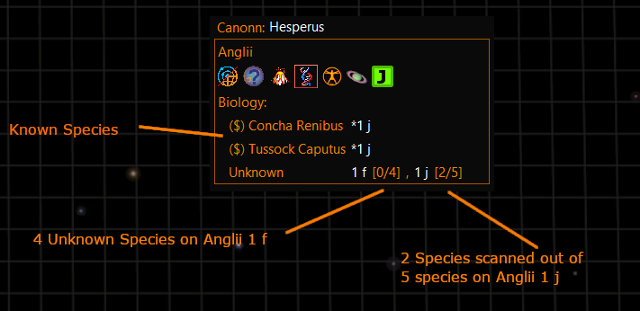
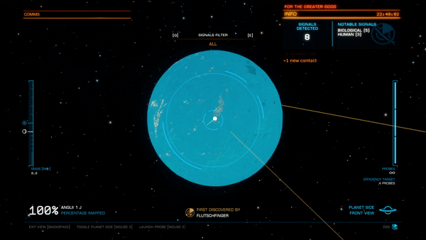
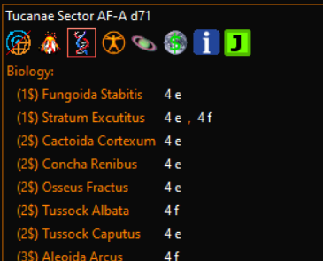
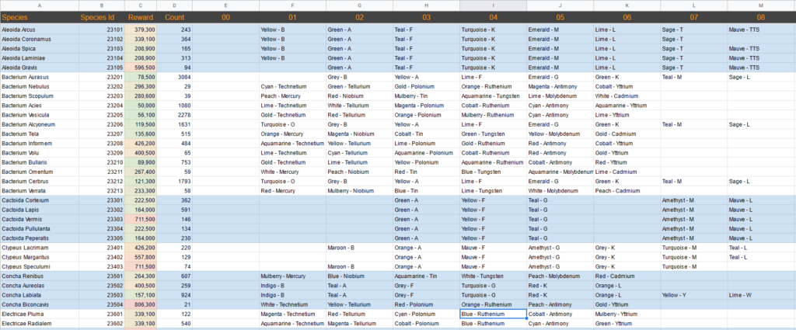

In this guide we will show you some tips and techniques for finding surface biology using the latest incarnation of the detailed surface scanner and how to quickly gather the required three scans per species so that you can sell the data at Vista Genomics and work your way up to the coveted Exobiologist Elite rank.
Before you start you will need the following equipment:
The Canonn Telemetry equipment comes in a number of forms. We recommend the EDMC-Canonn plugin but you may also use Journal-Limpet or the EDD-Canonn plugin with EDD. Once installed on your craft this will send data from your codex scans and your organic scans back to the Canonn database so that we can collate and analyze the data.
When you enter the system you should start scanning the bodies with your Full Spectrum System Scanner of FSS as it is commonly known. Any biology will be displayed in the panel on the top right corner of the screen along with a number representing the number of species.
If you are using the EDMC-Canonn plugin it will record the bodies on which biology and geology can be found and display them on the user interface. If you are not using the EDMC-Canonn plugin you may want to write down the body names of a notepad.
The EDMC-Canonn plugin will also show you if other commanders have found biology and geology and whether they are known or unknown.

Once you have a list of planets with biology you should head over to them and fire probes from your surface scanner. After the body has been thoroughly probed the scanner will overlay the body with a blue mask that shows you where surface features can be found. By default the scanner shows the location of all surface features but you can switch to views for each individual species.
You will notice that the mask is not a uniform blue colour. There is some variation from very dark blues through to a teal green. What you are looking for is teal green areas of solid colour. The less pixellated it looks the easier it will be to find the species you are looking for. If possible look for areas of overlapping species so you can minimize the amount of distance between species. Also you should remember that it is usually easier to search biology on the day side. If you switch to external camera the overlay is still displayed and you can zoom in to look a bit closer at potential landing sites.

If you flip between combat mode and analysis mode you can see that the different shades tend to correspond to different terrain types so the teal green areas will be showing you what terrain to look for, this will help guide you to the surface when the overlay is removed after the glide.
You can see in the slider image below how the green areas correspond to the flat areas that the Fonticulua on this planet prefer.
Once you reach the surface, you may immediately spot some of the larger forms of biology very quickly but frequently there will be biology that is harder to find even when you have identified a good spot from the surface scanner.
Tussocks and Shrubs can be challenging to spot because they are very small and aren’t very easy to see beyond about 50m distance. Some people will fly with their nose down so they can see the ground and the composition scanner can “ping” when it passes over a surface species but this may not work very well if you have a large ship like a Beluga or an Anaconda as the bridge will still be far from the ground and you run the risk of hitting the ground.
Another method you can employ is to switch to the external camera. Position your camera under the front landing landing leg and then lower it closer to the ground. Then you can fly the ship from the external camera at a suitable height and with the ship high above you, there is no risk that you will damage your ship.
Bacteria can be easier to locate from a higher elevation as they have a large surface area and can be seen from a distance. Again you can do this using your external camera and simply fly higher. You can also use the external camera with your SRV.
If you are unable to find any samples then consider going back to orbit and look for another location.
Some planets are so far from the sun that they are very dark and this makes finding biology challenging. Anything other than bacteria will show up using night vision but may be difficult to distinguish from rocks. Bacteria on the other hand do not show up with night vision and are pretty much invisible in the dark. Likewise there are occasions when visibility is good but the bacteria are just under the surface and not visible to the naked eye.
I have found that the best way to find bactieria in the dark or when not visible is using the turret on your SRV. Turn night vision and external lights off, enter your turret in analysis mode and you can drive the SRV while sweeping the landscape with your composition scanner. If it passes over bacteria it will make an audible ping and often the reticle will flash. Listen carefully for the ping as sometimes the reticle does not flash.
Immediately stop your SRV and sweep the location until you ping again and then scan the bacteria with you composition scanner before attempting to get closer. Once you have your composition scan in the bag, you can attempt to locate it on foot, using the organic scanner to highlight the bacteria.
Finding white/light colored bacteria on icy bodies can be hard. CMDR Grinning2001 recommends that you fly your ship towards reflecting sunlight. The Bacteria reflect less than the ice so they will stand out more.
The composition scanner on your ship or SRV provides Canonn with both species and the variety of the biology you scan with it. In contrast the Organic Scanner will give the species but not the variety. So we would ask that you always perform at least one Composition scan of each species you find. In addition the composition scan records the coordinates and this can help direct commanders to locations that have previously been scanned. You need to make sure that the composition scanner is assigned to one of your fire groups.
Composition scanning will reward you with some money per unique scan but this will not count towards your exobiology rank.
The organic scanner is used to obtain samples for Vista Genomics. The organic scanner has two modes. A pulse mode on secondary fire that will highlight all scannable biology in range and a scan mode that takes a sample.
The pulse mode will highlight any scannable biology in green and non-scannable in purple. If there is anything scannable in range it will also make an audible warble.
The pulse mode is also a useful tool to use if your Artemis suit does not have night vision as you can pulse it to help you find your way if you find yourself on the night side.
You must collect 3 samples of a species in order to log the species for sale to Vista Genomics and you can only store the partial samples of one species at a time. If you try to sample a different species then your sample data will be discarded.
The samples must be taken a certain distance apart in order to give sufficient genetic diversity for a scan. Each species has a range that is documented in the codex. If you are unsure how far to travel between samples check in the codex.
If you are a region of the galaxy that has systems close enough together that you don’t need a large jump range then I would recommend that you use a small fast ship with good shields to quickly fly from one location to another.
It is very important that when you take your third and final sample you wait for the sample to be logged and the sample container reset before boarding a vessel. If you do not then it is possible that the sample logging will take place on the next planet you are on when you unholster your organic scanner and the wrong location and coordinates will be logged by the Canonn Telemetry.
Canonn does not have a use for the samples beyond the first Organic Scan so we do not need you to collect all three scans, however Vista Genomics will only pay on the third scan.
The EDMC-Canonn plugin can give you an idea of the value of a species with a ($) symbol next to the species. (1$) is a value between 100,000 and 199,999 and ($9) is between 900,000 and 999,999. If there is no ($) sybol then it is worth less than 100,000
You may also want to study the price list before embarking on your second and third scans. It may be more lucrative to visit another body with higher value biology than to spend hours searching for a low paying sample.

The real prize is to get your name in the Codex so that other commanders can marvel at your amazing skill at finding new biology. Perhaps the easiest way is to leave the Inner Orion Spur and go visit some of the less well travelled regions of the galaxy.
You can also browse our data and identify gaps in the pattern of varieties and seek out star systems that are under-represented. As of writing we believe that there are many species that can potentially be found around Herbig Ae Stars. Be aware that there may be discovered biologicals that are not yet in our database but you will at least have the honour of being the first to insert a new entry in the Canonn database.
Study the data and you will be rewarded.

I wish you the best of luck in achieving your science goals and hope that this article helps you to achieve them in record time unless you are one of my rivals of course. I look forward to tossing all your research papers into my bin. If only my assistants wouldn’t insist on pulling them out and publishing them.
CMDR Powell Oblivion: please could you proof read this and make it really polished. I don’t really have time for handholding these imebciles. If you can pinch someone else’s research and disguise it a bit that would work for me. I don’t want to hear any more objections about ethics, you need to do as I say if you want tenure.